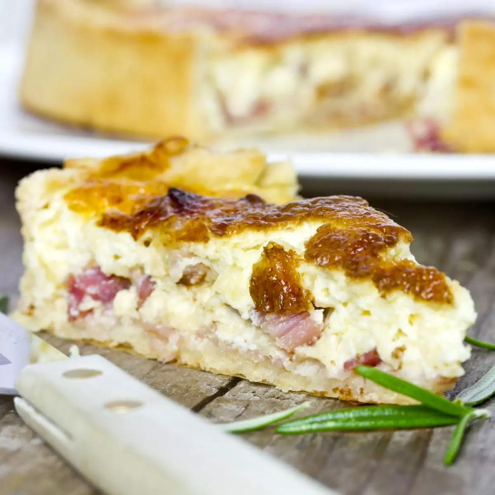

Quiche Lorraine

Variant of the Quiche, a French baked flan/tart with a savoury filling thickened with eggs, usually eaten cold.
The Quiche Lorraine is an easy recipe that provides you with a filling meal.
Ingredients :
- Pepper
- Salt
- Nutmeg
- Sour cream (20cl)
- Butter (30g)
- Lard (200g)
- Shortcrust pastry (200g)
- Eggs (3)
- Milk (20cl)
Steps :
- Pre-heat your oven at 180°C.
- Spread the shortcrust pastry in a cast.
- Brown the lard in a pan and then gently dry it off with a paper towel.
- Beat the eggs, the sour cream and the milk.
- Add the lard.
- Pour it onto the dough.
- Cook for 45 to 50 minutes.
- All done!